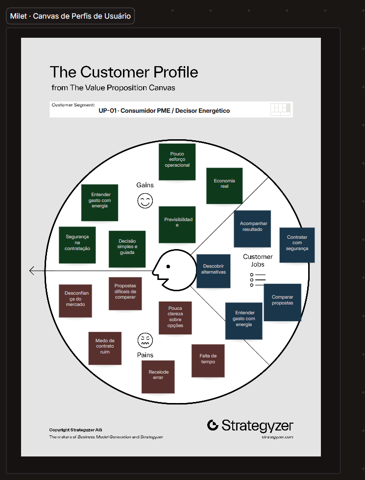
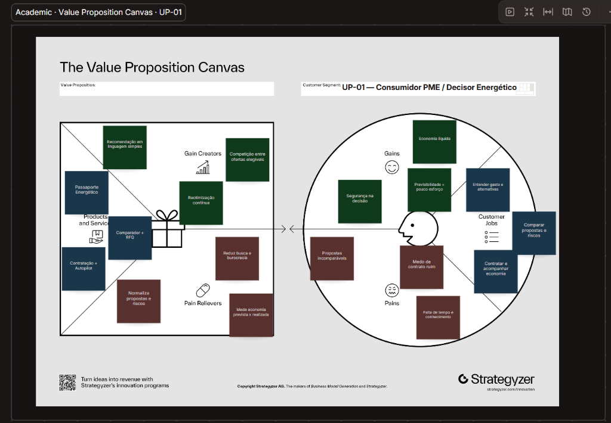
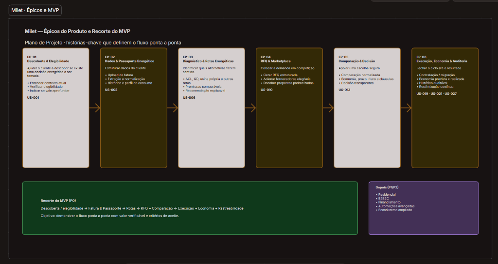
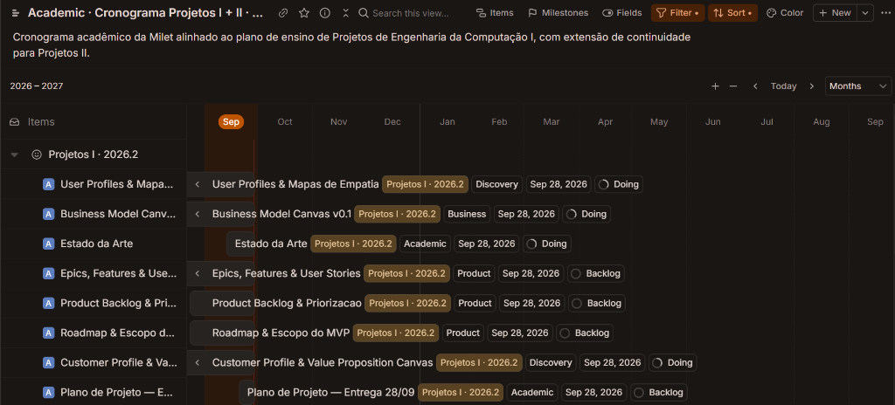

Milet
Plataforma digital para decisão, comparação e gestão contínua de energia
O Propósito da Milet
"A Milet investiga como transformar uma decisão energética hoje fragmentada em uma jornada digital contínua, rastreável e comparável."
Universidade Presbiteriana Mackenzie · Turma 6
Projetos de Engenharia da Computação I · 2026.2
Eduardo Ferreira de Mattos
Docente Orientador: Prof. Dr. Rodrigo Juliani
Energia também pode ser uma decisão de contratação.
A transformação da relação comercial do consumidor sem alterar a infraestrutura física de distribuição.
Passividade Tarifária
Decisão Ativa de Mercado
- ✓ Escolher fornecedor no Ambiente de Contratação Livre (ACL)
- ✓ Negociar condições comerciais, prazos e indexadores de tarifa
- ✓ Avaliar Geração Distribuída (GD), usina própria e consórcios
Mensagem-Chave: A rede física continua sendo da distribuidora; o que muda é a relação comercial de contratação da energia.
Contexto Visual: Grupo A & Grupo BTer escolha não significa saber escolher.
A sequência de fricções enfrentada pelo decisor PME e o diagnóstico da perda de contexto.
Não sabe que pode escolher
Descobre alternativas
Precisa entender elegibilidade
Encontra propostas diferentes
Compara riscos, prazos e economia
Precisa executar a transição
Verifica se economia ocorreu
“Sou elegível?”
“Qual alternativa faz sentido?”
“Quanto realmente economizo?”
“Essas propostas são comparáveis?”
“Quem executa?”
“O resultado prometido aconteceu?”
Conclusão Milet: O problema da Milet não é apenas encontrar preço. É preservar o contexto contínuo entre dados, decisão, contratação e resultado.
Preservação de ContextoMercado e Regulação: o terreno da comparação no Brasil.
A evolução dos ambientes de contratação e o papel da CCEE como infraestrutura de mercado.
Dualidade do Setor
Separação entre o Mercado Cativo (ACR, tarifas reguladas da distribuidora) e o Mercado Livre (ACL, contratos bilaterais com comercializadores).
Abertura do Grupo A
Todos os consumidores em Média/Alta Tensão ganharam o direito de migrar via varejistas habilitação CCEE, multiplicando os potenciais migrantes.
Geração Distribuída (GD)
Consórcios e créditos de energia (Lei 14.300/22) operam em regramento paralelo ao ACL, exigindo motores de simulação específicos.
Plataforma Centralizada
A CCEE avança na digitalização das migrações e planeja a futura plataforma pública centralizada de comparação de ofertas.
Mapeamento do mercado: soluções existentes e referências.
Matriz enxuta baseada estritamente nas referências documentadas no relatório N1.
| Solução / Player | Modelo de Atuação | Escopo Documentado no Relatório N1 | Foco de Mercado |
|---|---|---|---|
| UC Livre | Marketplace + RFQ + Comparação | Plataforma de cotação de energia no mercado livre com leilão reverso e comparação de propostas. | Consumidores Grupo A / ACL |
| Deskonta | Marketplace / Geração Distribuída | Conexão direta entre consumidores e cooperativas/usinas de geração distribuída compartilhada. | Geração Distribuída (GD) |
| Energy Ogre | Gestão Recorrente de Contratação | Concierge independente que busca, negocia e troca contratos de energia continuamente (EUA/Texas). | Gestão Recorrente Assinada |
| EnergySage | Marketplace + Propostas Comparáveis | Marketplace transparente de energia solar e eficiência com cotações padronizadas e neutras. | Comparação e Transparência |
| CCEE | Infraestrutura de Mercado | Contabilização, liquidação setorial e futura plataforma pública centralizada de comparação. | Infraestrutura Estatal Regulada |
Rigor Acadêmico: Matriz construída sem atribuir características que não estejam estritamente documentadas no relatório N1.
Relatório N1 · Seção 2.2A lacuna investigada: a integração contínua dos mecanismos.
Como os componentes isolados se unem em uma hipótese acadêmica de engenharia.
Hipótese Acadêmica do Projeto
“Os componentes existem isoladamente. A hipótese acadêmica é testar a integração desses mecanismos em uma jornada contínua adequada ao contexto brasileiro.”
Perfis e Proposta de Valor: Jobs, Pains e Gains.
Engenharia orientada a requisitos reais do Fibery, com destaque para o perfil prioritário Consumidor PME.


Perfis Prioritários
- Consumidor PME / Decisor Energético (Destaque Absoluto)
- Operador Milet
- Comercializadora / Fornecedor
- EPC / Integrador Solar
Épicos, User Stories e a construção do MVP em Projetos I.
A espinha dorsal das 28 User Stories e a entrega da primeira versão funcional no semestre atual.

Posicionamento do MVP em Projetos I
“MVP Projetos I: primeira versão funcional do fluxo prioritário, com integrações simuladas ou operação assistida quando necessário.”
Business Model Canvas: hipóteses em validação.
O mapeamento estruturado do modelo de valor no Fibery sob a regra da Strategyzer.

PMEs / Consumidores Empresariais (Grupo A e Grupo B comercial)
entender ➔ comparar ➔ competir ➔ executar ➔ acompanhar ➔ reotimizar
Hipóteses de taxas de originação/concierge, ainda não validadas comercialmente.
Cronograma Oficial: Projetos I (2026.2).
Datas oficiais e a entrega da primeira versão funcional do MVP no marco obrigatório de 19/10/2026.
Discovery
Tema, problema, perfis e Estado da Arte
Plano N1
Plano de Projeto, Canvas, backlog e cronograma
Construção MVP
Construção da 1ª versão funcional do MVP
ENTREGA MVP
Apresentação e validação do MVP funcional
SSDLC & Seg.
SSDLC, segurança e conformidade LGPD
Testes & Valid.
Hipóteses, testes e validação empírica
Fechamento N2
Apresentação final de Projetos I
Mensagem do Marco: “O MVP não fica para Projetos II.”
Gantt Geral & Continuidade em Projetos II.
A transição entre a versão funcional construída em Projetos I e o amadurecimento em Projetos II.

- Evolução técnica e refatoração
- Mais integrações reais (APIs CCEE e Distribuidoras)
- Automação avançada e segurança estendida
- Piloto ampliado com consumidores reais
- Consolidação da solução e Monografia Final
Resultados Esperados: do Checkpoint de MVP à Continuidade.
Divisão clara das entregas mensuráveis nos três marcos de desenvolvimento do projeto.
Primeira Versão Funcional
- ✓ Primeira versão funcional entregue
- ✓ Fluxo prioritário demonstrável
- ✓ Ingestão e elegibilidade de dados
- ✓ Diagnóstico e comparação inicial
- ✓ Acompanhamento básico
- ✓ Operação humana/simulada onde necessário
MVP Refinado & SSDLC
- ✓ MVP refinado com testes iniciais
- ✓ Arquitetura técnica documentada
- ✓ SSDLC e conformidade LGPD aplicados
- ✓ Hipóteses de produto validadas
- ✓ Backlog atualizado por evidências
Maturidade & Piloto
- ✓ Mais integrações reais de APIs
- ✓ Maior automação do fluxo
- ✓ Robustez técnica e observabilidade
- ✓ Validação ampliada em piloto real
“Projetos I precisa provar que o ciclo funciona. Projetos II deve provar que ele pode amadurecer.”
Milet · Energia em Mais Liberdade.
Plataforma digital para decisão, comparação e gestão contínua de energia
Engenharia da Computação · Projetos de Engenharia da Computação I (2026.2) · Turma 6
Orientador: Prof. Dr. Rodrigo Juliani · Universidade Presbiteriana Mackenzie
Muito obrigado.